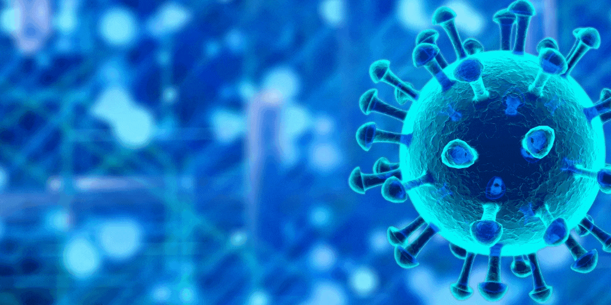

Overview

COVID-19 is a respiratory illness caused by the coronavirus SARS-CoV-2. It was first identified in December 2019 in Wuhan, China, and has since spread globally, leading to a worldwide pandemic. The virus spreads primarily through droplets of saliva or discharge from the nose when an infected person coughs or sneezes.
The rapid spread of the virus has overwhelmed healthcare systems around the world, leading to significant morbidity and mortality. Efforts to control the spread include social distancing measures, lockdowns, and the development of vaccines and treatments. The pandemic has had far-reaching impacts on global health, economies, and daily life.
Governments and health organizations continue to work together to understand the virus, implement measures to control its spread, and mitigate its effects. Public health campaigns emphasize the importance of hygiene, wearing masks, and getting vaccinated to protect individuals and communities.
Symptoms
Common symptoms of COVID-19 include fever, dry cough, and tiredness. Other symptoms that are less common and may affect some patients include aches and pains, nasal congestion, headache, conjunctivitis, sore throat, diarrhea, loss of taste or smell, a rash on the skin, or discoloration of fingers or toes.
In more severe cases, the infection can cause pneumonia, severe acute respiratory syndrome, kidney failure, and death. People with underlying medical conditions and older adults are at a higher risk of developing serious complications from the virus.
Symptoms typically appear 2-14 days after exposure to the virus. It is important to seek medical attention if you experience difficulty breathing, persistent pain or pressure in the chest, confusion, inability to stay awake, or bluish lips or face. Early diagnosis and treatment can improve outcomes and reduce the risk of severe illness.
Prevention
To prevent infection and to slow transmission of COVID-19, do the following:
- Wash your hands regularly with soap and water, or clean them with an alcohol-based hand rub.
- Maintain at least a 1-meter distance from others.
- Avoid touching your face.
- Cover your mouth and nose when coughing or sneezing.
- Stay home if you feel unwell.
- Refrain from smoking and other activities that weaken the lungs.
- Practice physical distancing by avoiding unnecessary travel and staying away from large groups of people.
Wearing a mask in public settings, especially when social distancing is difficult to maintain, can help reduce the spread of the virus. Masks should be worn properly, covering both the nose and mouth, and should be used in conjunction with other preventive measures.
Vaccination is a critical tool in controlling the pandemic. Vaccines have been developed and distributed globally, providing protection against severe illness and death caused by COVID-19. Staying informed about vaccination opportunities and getting vaccinated when eligible is essential for personal and public health.
Resources
For more information, visit the following resources:
- World Health Organization (WHO)
- Centers for Disease Control and Prevention (CDC)
- National Institutes of Health (NIH)
These organizations provide up-to-date information on COVID-19, including guidance on prevention, symptoms, treatment, and vaccination. They also offer resources for healthcare professionals, researchers, and the general public to stay informed and safe during the pandemic.
Local health departments and governments also provide valuable information and resources tailored to specific communities. Staying connected with local health authorities ensures that you receive accurate and relevant updates and support.